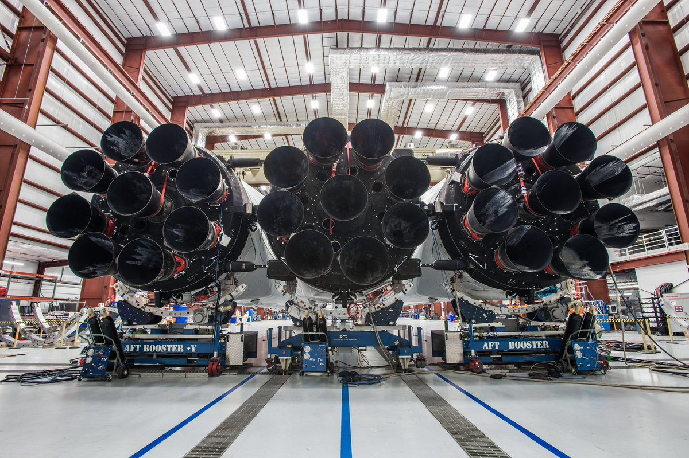
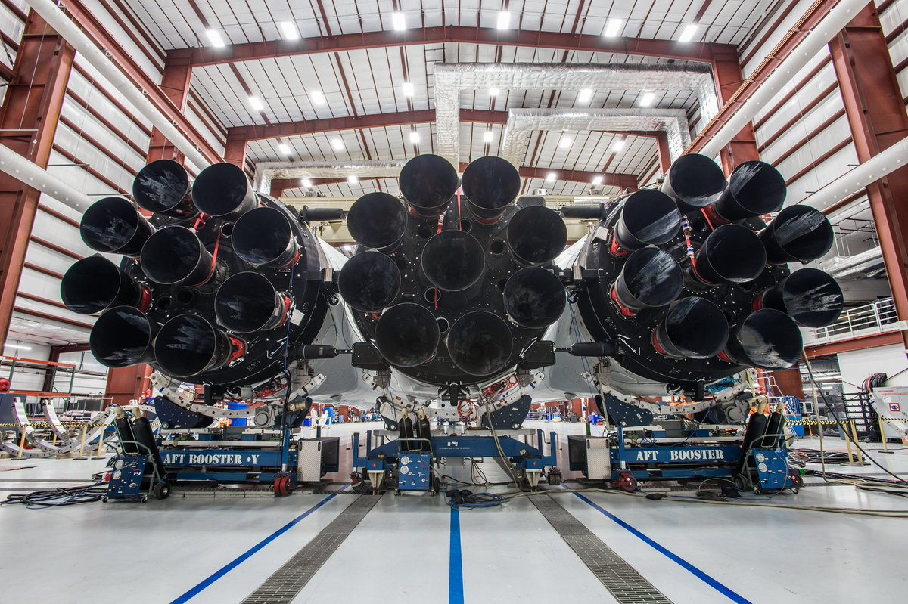

Falcon 1 es el primer vehículo de lanzamiento producido por SpaceX. Su vuelo inaugural tuvo lugar el 24 de marzo de 2006. El cohete tenía una capacidad de carga de aproximadamente 670 kilogramos a la Órbita Terrestre Baja (LEO) y estaba propulsado por el motor Merlin 1C, alcanzando una velocidad orbital de aproximadamente 28,000 km/h. Desafortunadamente, los primeros tres lanzamientos terminaron en fracaso. Sin embargo, el 28 de septiembre de 2008, Falcon 1 alcanzó con éxito la órbita, convirtiéndose en el primer cohete privado en lograr esta hazaña.


 



/2023/01/17/image/jpeg/hstIa6uTAe6W2pHqjLULfHHJLaS7Gfpjygja859Q.jpg)